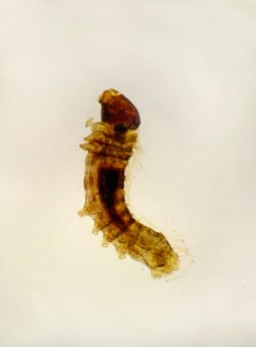
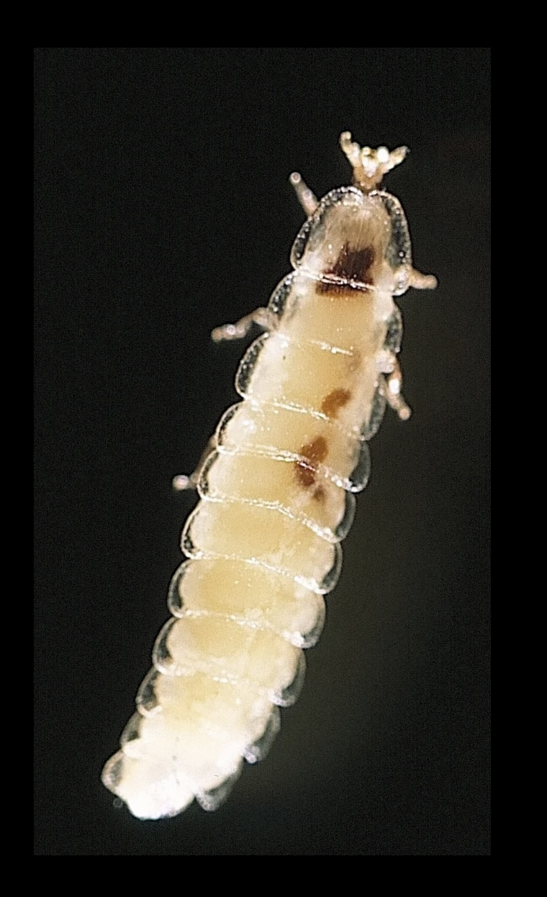
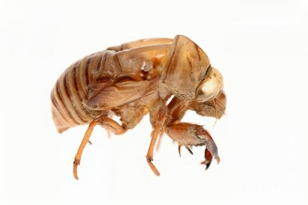

Beneficial

Apis mellifera
Western Honeybee
üî¨ Key Features
- Pollen Basket (Corbicula) - concave area on hind legs with stiff hairs
- Proboscis - long, tube-like mouthpart for sucking nectar
⚙️ Functions
- Pollen collection and transport to hive
- Nectar feeding from flowers
- Proboscis can extend for feeding and coil when not in use
Importance
- Understanding pollination biology
- Reveals foraging behavior of bees
- Demonstrates evolutionary adaptation of insect mouthparts
Pest

Anopheles spp.
Mosquito (Malaria vector species)
üî¨ Key Features
- Head Capsule - contains compound eyes and antennae with sensory hairs
- Mouthparts (Proboscis Complex) - specialized for blood-feeding
- Labrum - forms food canal for sucking blood
- Mandibles & Maxillae - cut into host's skin
- Hypopharynx - delivers saliva with anticoagulants
- Sensory Palps - detect heat, moisture, and host odors
Importance
- Understanding vector biology and malaria transmission
- Species identification in mosquito research
- Evolution of piercing-sucking mouthparts
Pest
Musca domestica
Housefly
üî¨ Key Features
- Tarsal Claws - at tip of each leg for gripping rough surfaces
- Pulvilli - pad-like structures beneath claws with sticky hairs
- Sensory Hairs - detect surface texture and chemicals
⚙️ Functions
- Mechanical anchoring during walking or landing
- Walking on smooth vertical or inverted surfaces
- Movement coordination and feeding behavior
Importance
- Demonstrates insect locomotion adaptations
- Surface adhesion mechanisms in insects
- Understanding how flies contaminate surfaces
Beneficial

Bombyx mori
Silkworm
üî¨ Key Features
- Segmented body - head, thorax, abdomen
- Chewing mouthparts adapted for mulberry leaves
- Prolegs and spiracles visible
- Large paired silk glands for silk production
Importance
- Source of natural silk (sericulture industry)
- Model organism in biotechnology and genetics
- Pupae used as food and animal feed

Coptotermes formosanus
Termite / White Ant
üî¨ Key Features
- Soft-bodied, pale insects resembling ants
- Social structure - king, queen, workers, soldiers
- Chewing mouthparts for wood and cellulose
- Symbiotic gut protozoa for cellulose digestion
Importance
- Economic pest - damages wood, crops, and buildings
- Ecological role - decomposers, recycle cellulose
- Model for studying social insect behavior

Formica spp.
Ant
üî¨ Key Features
- Segmented body with narrow waist (petiole)
- Elbowed antennae for sensing environment
- Strong mandibles for biting and carrying
- Social organization - queen, workers, soldiers
Importance
- Soil aeration, seed dispersal, decomposition
- Some species as agricultural pests
- Model for studying social behavior and cooperation
Beneficial

Lampyridae (family)
Firefly / Lightning Bug
üî¨ Key Features
- Segmented body - head, thorax, abdomen
- Soft elytra and membranous hindwings
- Light-emitting organs (photocytes) in abdomen
- Antennae for sensing environment
Importance
- Bioluminescence for mating signals
- Predators of small insects in larval stage
- Studied for bioluminescent proteins (luciferase)
Beneficial

Magicicada spp.
Cicada
üî¨ Key Features
- Large compound eyes and short antennae
- Membranous wings for flight
- Tymbal organs on abdomen for sound production
- Piercing-sucking mouthparts for plant sap
Importance
- Herbivores that provide food for predators
- Studied for sound production and life cycles
- Minor economic impact on young trees
Pest
Culex pipiens
Common Mosquito
üî¨ Key Features
- Slender body - head, thorax, abdomen
- Proboscis for piercing and sucking blood
- Antennae to detect host cues (CO₂, odors)
- Long, narrow wings with venation
- Sexual dimorphism - males with bushy antennae
Importance
- Vector of diseases (malaria, dengue, West Nile virus)
- Crucial for vector control and epidemiology
- Model for understanding sensory biology
Pest
Drosophila spp.
Fruit Fly
üî¨ Key Features
- Small, segmented body - head, thorax, abdomen
- Compound eyes and short antennae
- Three pairs of legs and one pair of functional wings
- Mouthparts adapted for sponging liquids
- Visible bristles (setae) and reproductive organs
Importance
- Widely used genetic and developmental research model
- Short life cycle for inheritance pattern studies
- Educational tool for insect morphology
Beneficial
Bombus spp.
Bumblebee
üî¨ Key Features
- Robust, hairy body - head, thorax, abdomen
- Large compound eyes and short antennae
- Three pairs of legs with pollen baskets
- Two pairs of wings for flight
- Proboscis for nectar feeding
Importance
- Important pollinators for agriculture
- Supports plant reproduction in ecosystems
- Studied for behavior and flight mechanics
Pest

Locusta migratoria
Migratory Grasshopper
üî¨ Key Features
- Compound eyes with multiple ommatidia for wide-angle vision
- Antennae as sensory organs (touch, smell)
- Chewing mouthparts for plant material
- Wing veins for strength and flexibility
- Strong hind legs specialized for jumping
Importance
- Major agricultural pest affecting crops
- Flight studies help understand wing mechanics
- Compound eyes provide model for vision studies
- Food source for birds, reptiles, and mammals
Beneficial

Coccinella septempunctata
Seven-spotted Ladybird / Ladybug
üî¨ Key Features
- Rounded, convex body with red elytra and seven black spots
- Head with compound eyes and short antennae
- Three pairs of legs for walking
- Elytra cover membranous hindwings
- Chewing mouthparts for feeding on aphids
Importance
- Natural predator of pests like aphids
- Contributes to pest management in agriculture
- Studied in entomology and ecology research
Beneficial

Gerridae (family)
Water Strider
üî¨ Key Features
- Slender, elongated body adapted for surface locomotion
- Long legs with hydrophobic hairs
- Head with compound eyes and antennae
- Middle pair of legs for propulsion, hind pair for steering
- Piercing-sucking mouthparts for feeding on trapped insects
Importance
- Predator of small aquatic insects
- Behavioral studies of surface tension adaptations
- Model organism for biomechanics research
Beneficial
Danaus plexippus
Butterfly Proboscis
üî¨ Key Features
- Long, coiled tubular structure extending from head
- Formed by two interlocked galeae
- Flexible - can coil or extend for feeding
- Adapted for sucking nectar from flowers
- Sensory setae for taste detection
Importance
- Allows nectar feeding from deep flowers
- Aids in plant reproduction through pollination
- Studied for insect morphology and feeding behavior

Atta spp.
Leafcutter Ant
üî¨ Key Features
- Strong mandibles for cutting leaves
- Antennae for sensing and communication
- Three pairs of legs for walking and carrying
- Social structure - queen, workers, soldiers
Importance
- Decomposes plant material, enriches soil
- Can damage crops by leaf cutting
- Studied for social behavior and colony organization
Beneficial

Carausius morosus
Stick Insect
üî¨ Key Features
- Long, slender body mimicking twigs or sticks
- Head with compound eyes and thread-like antennae
- Elongated thorax and legs for camouflage
- Flexible abdomen for blending with branches
- Chewing mouthparts for leaves
Importance
- Camouflage for predator avoidance
- Studied for mimicry and insect morphology
- Demonstrates adaptation and evolution
Beneficial

Ephemera danica
Mayfly
üî¨ Key Features
- Transparent, membranous wings with visible vein patterns
- Thoracic muscles supporting wing movement
- Gills along abdomen for aquatic respiration (nymphs)
- Compound eyes and antennae for sensing
Importance
- Indicator of freshwater ecosystem health
- Studied for insect development and aquatic adaptations
- Demonstrates wing morphology and gill function
Beneficial
Carabus spp.
Ground Beetle
üî¨ Key Features
- Leg segments - coxa, femur, tibia, tarsus clearly visible
- Extensor and flexor muscles controlling movement
- Claws at end of tarsi for gripping surfaces
- Tendon-like apodemes for muscle attachment
- Exoskeleton for support and protection
Importance
- Predator of soil-dwelling insects
- Demonstrates insect locomotion and biomechanics
- Understanding muscle-exoskeleton interaction
Beneficial

Hydropsyche spp.
Caddisfly Larva
üî¨ Key Features
- Soft, segmented body - head, thorax, abdomen
- Chewing mouthparts for feeding on detritus and algae
- Thoracic legs for locomotion
- Case-building structures with silk glands
- Gills along abdomen for aquatic respiration
Importance
- Indicator of freshwater ecosystem health
- Demonstrates case-building and adaptation
- Studied for silk production and aquatic insect morphology